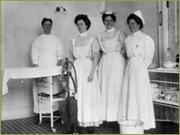
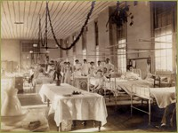
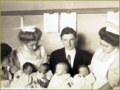
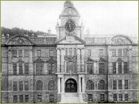
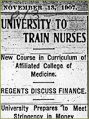
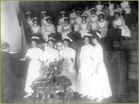
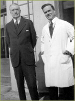
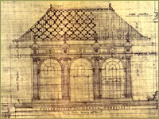
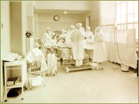

Founding of the University of California Medical Center
Perhaps the most important lasting impact of the earthquake emergency was the creation of a dedicated University Teaching Hospital on the Parnassus campus, a facility designed to serve the public as well as to fulfill the instructional mandate of the University of California. President Wheeler’s long-expressed wish for a teaching hospital at Parnassus had suddenly become an urgent civic responsibility. In May, just a month after the disaster, the medical faculty voted to solve the hospital problem, recommending that the Board of Regents transfer the work of the Departments of Physiology and Anatomy and Pathology to Berkeley “in order that the college building may be devoted to the purposed of the clinical years.” Anatomist Austin Flint wrote to Wheeler in 1907, “there can be no question that the atmosphere of Berkeley is pleasanter than the isolation of the city if one is interested in university work. … the work in Berkeley will be much more interesting than it was in the city and we look forward to living there.”
"Your committee recommends a grant of $10,000 to be given immediately, and most strongly urges a further appropriation by the Finance Committee of $100,000 as a fund, the income of which shall make possible a first-rate free hospital in San Francisco. Several members of the committee visited the building at the Affiliated Colleges which is now being converted into a hospital. … The deplorable condition of the City and County Hospital, over-crowded as it is, renders it almost imperative that there be some such well-administered institution as the contemplated University Hospital would become under the management of the Well-known physicians who are interested in it.”
- The Committee on Rehabilitation of Charitable Institutions, June 4, 1907
- The Committee on Rehabilitation of Charitable Institutions, June 4, 1907
Creating the First UC Hospital

Within weeks, the Regents approved the faculty appeal and appointed a Ways and Means Committee to raise funds for the building’s conversion. Dean Arnold D’Ancona was appointed first director of the nascent teaching hospital. His correspondence for that period contains optimistic progress reports to the Regents, but also reveals the enormity of the task. Throughout 1906 and spring of 1907 he records the acquisition of litters, ward carriages, steam heat boilers and radiators, anesthetics, disinfectants, drugs, fuel, gauze, cotton, crockery, glassware, bed linens and towels. Anticipating the day when the University would take over hospital expenses, he developed an accounting system for nursing, housekeeping, telephone, water, x-ray equipment and lab instruments.
Operating room in the old UC Hospital, 1913.

Conversion to a fully functional hospital was a monumental architectural shift for the medical school building, which had only recently been remodeled to suit the basic science teaching needs of the Departments’ three new fulltime faculty, now at Berkeley. To take advantage of the north light, an operating room with rooms for anesthetizing, sterilizing, and x-ray apparatus, were located on the third floor, where histology labs had once been sited. Dean D’Ancona worked diligently to create an obstetrics ward, and soon after, a six-bed pediatric ward was arranged within the hospital as well as a specialized newborn nursery under the direction of pediatrics. The second floor was equipped with separate men's and women’s wards of fourteenMen’s ward in the old UC Hospital, Medical School Building at Parnassus, ca 1915.

to fifteen beds each for medical and surgical needs. To replace the city’s decimated outpatient facilities, the entire ground floor of the Medical building was opened by October 1906 as an outpatient clinic.
Medical students joined student nurses in the Pediatrics Ward in the old UC Hospital, 1912.
The variability of recorded founding dates for the hospital reveals the haste and improvisational nature of its creation. D’Ancona had intended to have the hospital opened for patients by the University of California’s Charter Day celebration in March 1907, but the actual date of opening was sometime in mid-April, just a year after the earthquake. Records reveal three different accounts of the opening of the hospital and the arrival of the “first” patient. Collectively, the response to disaster resulted in the construction of a new “idea and ideals of the teaching of medicine and the care of the sick on the Pacific Coast,” in the words of the

California State Journal of Medicine in 1907. Donors were assured that “the maintenance of this hospital will do much for the care of the sick poor, but far more for the advancement of scientific medicine in this state….”
The Medical School building at Parnassus was refitted to house a 75-bed teaching hospital in 1907.
Founding the UC Hospital Training School for Nurses
Arguably, in the long term, the most significant change prompted by the earthquake emergency for the University’s Affiliated Colleges was the development of a University of California Training School For Nurses in connection with the new teaching hospital. This educational venture would eventually result in the permanent creation of a fourth professional school located at Parnassus.
By 1900 San Francisco had several nurses’ training schools that set precedents for nursing education on the Pacific Coast. As the hospital was being outfitted, the medical faculty committee on hospitals authorized D’Ancona to recruit graduate nurses and attendants. Orthopedic Surgeon Dr. Harry Sherman and other enthusiastic medical faculty selected Miss Margaret A. Crawford, a highly regarded graduate nurse from the St Luke’s Hospital school, to direct both the training school and nursing services in the UC teaching hospital. Although formal regential approval for a training school for nurses was not announced until December of 1907, well after the hospital opened for patients, the first student nurse entered in June of 1907, and two more trainees arrived in September and December.

The California Nurses Association had organized in 1903 and by 1905 they had secured passage of a licensing law for registered nurses. Dean D’Ancona seemed well aware of the problems of exploitation in many of the first training schools, where students were seen as a source of free labor and were barely given time for coursework or supervised hands-on instruction. A minor conflict over the planned term of instruction arose in 1907, when the activist nurses of the California Nursing Association lobbied for a three-year course requirement for registration eligibility, while the UC physicians preferred a two-year course. In consultation with the faculty’s Committee on the University Hospital, the Dean outlined a curriculum of 24 months of “active practical work, with a probationary period of three months.” Anxious to reassure the nurses that there was no intention of short-changing the new students, he emphasized that, “the faculty considers that in the conduct of the training school the university should follow the same ideals and purposes that guide all other departments of the University.” A third year of instruction was incorporated officially in 1909.
Announcement of creation of the Training School in the SF Chronicle November 13, 1907;
Miss Crawford’s high standards for selecting UC nursing matriculants, sometimes created difficulties, but there is evidence that faculty and the dean yielded to her judgment of the potential character and stamina of nursing students. Applicants for admission had to provide proof of high school graduation, a letter of character from family clergyman, and a letter of good health from family physician. A distinctive feature of the UC Hospital’s policy with respect to nursing labor was the hiring of graduate nurses to supervise key departments in a higher proportion to other nursing schools in the city or in the nation. This seems to be correlated with the faculty’s desire to create an exemplary teaching facility, staffed adequately with graduate nurses, and their reluctance to rely chiefly on untutored student labor.
“it is with some regret that I have come to the conclusions that in the main, training schools for nurses have been est. to meet the convenience of hospital and lessen their expenses, rather than for the purpose of training qualified nurses. The training school of our hospital should be conducted for the purpose of preparing a given number of nurses for an honorable professional career, and to provide the public with thoroughly qualified nurses….the nurses should be so trained that…they will look upon their profession as a means of social service.”
- Dean Arnold D’Ancona
- Dean Arnold D’Ancona

In spring of 1910 the Training School held its first formal graduation ceremony, with Dean D’Ancona enthusiastically presenting diplomas to the handful of new university-trained nurses.
Dean Arnold D'Ancona awarding diplomas at the first graduation ceremony in 1910
In the first two years Miss Crawford shouldered the burden of instruction, using a text in practical nursing to guide her students, and key Medical Department faculty, including Drs. Sherman, Moffitt, and a young surgical resident named Howard Naffziger taught evening lectures. Other changes within the training school were determined by external forces. California’s 1913 labor law mandating an eight-hour day for student nurses prompted Dean Moffitt to budget money for hiring more graduate staff nurses and to plan for an increased number of students, in an effort to maintain an adequate ratio of nurses to patients.
Dean Herbert C. Moffitt’s Influence

In 1913 Dean Arnold D’Ancona retired to serve on the San Francisco Board of Education and Herbert C. Moffitt became Dean of the College of Medicine. A Harvard graduate with postgraduate training in Vienna, Moffitt had served on the faculty since 1889 as professor of the Principles and Practice of Medicine. During his time at UC, he became known as the leading physician on the West Coast and was a much-beloved mentor to his early twentieth century students. His businessman brother James K. Moffitt became a regent of the University in 1911, and occupied a chair on the Board for 37 years, exerting great influence on behalf of the Parnassus campus throughout his long period of service. James Moffitt’s presence on the UC Board of Regents created a powerful impetus for keeping San Francisco as the essential location for the medical school, and in 1916 the Regents commissioned Dean Herbert Moffitt to study medical education around the county and to draw up a plan for future development of a reconsolidated Medical School at Parnassus.
Dean Herbert C. Moffitt and Hooper Researcher William J. Kerr (later the first full-time Professor and Chair of Medicine) pose on Parnassus Ave.

Moffitt's ambitious plan, drafted at the same time that he was fundraising and planning for a new UC Hospital building, recommended that new buildings to house anatomy and pathology be built in back of the new hospital at a cost of $150,000. To house physiology and biochemistry and the requisite student labs, he urged that the old Medical School building be refitted for laboratory instruction and that the outpatient facilities located in the basement be removed to a new building to be erected for this purpose in front of the UC Hospital on Parnassus Avenue. A second phase of his plan would “remove the Dental and Pharmacy Schools, and transform…[the building]…into laboratories suitable to the needs of the state departments of Hygiene, Pure Foods and Sanitary Engineering.” With the exception of the nurses' dorm built across the street from the hospital in 1919, little of Moffitt's plan ever came to pass, but it identified the potentially controversial and conflicting space requirements and shifting priorities that would plague the Parnassus campus for the remainder of the century.
Architectural drawing of UC Hospital
Once the first UC hospital in the medical school building was up and running, its limitations became all too apparent. D’Ancona’s optimistic reports to the Regents on the progress and ease of converting the building were complicated by the actual difficulties of patient care in a three-story building with no elevators. Flexner had reported in 1910 that the hospital was “small, but adequate” and was doubtless made aware that the Regents and the Faculty had long been working on plans for a much larger facility. Almost from the opening day of the first hospital, medical staff began planning for a new building to be built as had been originally designed as an elaborate pavilion plan backing up to the Sutro Forest. A special Regent’s committee was appointed to plan for financing and building a new hospital in 1913, and active fundraising began under the direction of the Medical Department’s popular Dean, Herbert Moffitt. Secure in his community connections, Dean Moffitt initiated a successful private fund drive to raise $750,000 to build a new UC Hospital at the west end of the Affiliated Colleges site.

In January 1914 President Wheeler announced to the regents that planning could begin on the new hospital and in 1915 they appointed Louis Parsons Hobart as architect for this projected new hospital. Hobart, a leading architect in the Bay Area, also designed Grace Cathedral, the California Academy of Sciences, and Steinhart Aquarium. Construction proceeded with much anticipation and delay but by August 1917 the new 225-bed hospital was ready for occupancy.
"Modern" operating room in the new UC Hospital, 1924.
The Medical School Building, which had housed the first hospital for a decade, was refitted as an extensive outpatient department; basic science instruction remained on the Berkeley campus; and fulltime clinical professors finally had a fully adequate infrastructure to support their academic ambitions.
>> A Divided Campus: Berkeley and San Francisco
{% include footer.html %}